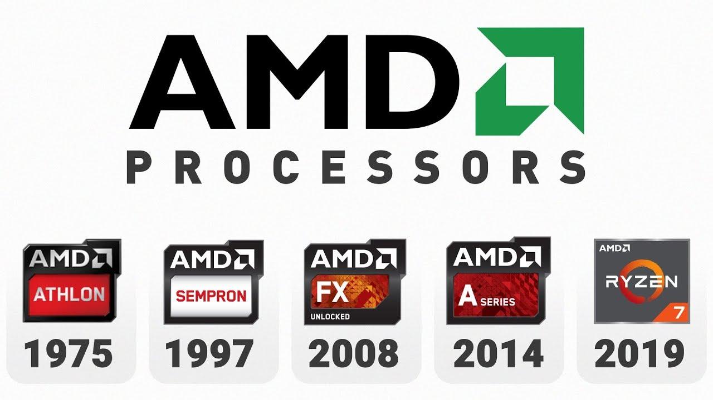

Advanced Micro Devices, Inc.
Uma empresa americana
Data: 1969 - presente
Sede: Sunnyvale, Santa Clara, California, Estados Unidos da América
Áreas de envolvimento:
semicondutor
·
microprocessador
·
memória
flash
Sede: Sunnyvale, Santa Clara, California, Estados Unidos da América
Áreas de envolvimento: semicondutor · microprocessador · memória flash
Advanced Micro Devices, Inc. (AMD), uma empresa global especializada no fabrico de dispositivos semicondutores utilizados no processamento de computadores. A empresa também produz memórias flash, processadores grágicos, aka GPUs ou placas gráficas e uma variedade de componentes usados em eletronicos do consumidor.
A AMD foi fundada em 1969 por Walter Jeremiah ("Jerry") Sanders, um antigo executivo da Fairchild Semiconductor Corporation, e sete outros. A empresa lançou o seu primeiro produto em 1970 e tornou-se pública dois anos mais tarde. Em meados da década de 1970, a empresa começou a produzir chips de computador. Começando como um segundo fabricante de chips de computador, a empresa colocou uma grande ênfase na qualidade e cresceu de forma constante. Em 1982, a empresa começou a fornecer chips de segunda fonte para a Intel Corporation, que fabricava o microprocessador utilizado nos computadores pessoais IBM (PCs). O acordo com a Intel terminou em 1986. Em 1991, a AMD lançou a família de microprocessadores AM386, um chip de engenharia inversa que era compatível com a próxima geração de microprocessadores Intel de 32 bits 386. Seguiu-se uma longa batalha legal que foi finalmente decidida numa decisão do Supremo Tribunal dos EUA de 1994 a favor da AMD. Nesse mesmo ano, a Compaq Computer Corporation contratou com a AMD para produzir chips compatíveis com a Intel para os seus computadores.

Em 1996, a AMD adquiriu uma empresa de microprocessadores conhecida como NexGen e começou a ramificar-se do mercado de chips compatíveis com a Intel. Em 2000, a AMD introduziu o processador Athlon, que foi concebido para executar o sistema operativo Windows da Microsoft Corporation. Com o lançamento do processador Athlon, a AMD tornou-se a primeira empresa a produzir um microprocessador de 1-GHz (gigahertz), o que marcou a AMD como um concorrente sério no mercado dos chips. Em 2003, a empresa lançou o chip Opteron, outro produto que demonstra a capacidade da empresa para produzir chips de alta qualidade. Em 2006, a AMD absorveu a ATI Technologies, um fabricante de placas gráficas de vídeo para utilização em PCs. Em 2008, a AMD anunciou planos para dividir a empresa em duas - uma parte concebendo microprocessadores e a outra fabricando-os. Este anúncio seguiu-se à notícia de que a Advanced Technology Investment Company e a Mubadala Development Company, ambas sediadas em Abu Dhabi, adquiririam uma participação de controlo na AMD, enquanto se aguardava a aprovação dos accionistas e dos governos dos EUA e da Alemanha.
Em 2009, na sequência de uma série de queixas apresentadas pela AMD, a Comissão Europeia multou a rival Intel num montante recorde de 1,06 mil milhões de euros (£948 milhões; $1,45 mil milhões) por se ter envolvido em práticas anticoncorrenciais que violaram as leis anti-monopólio da União Europeia. Estas práticas envolveram alegadamente compensações financeiras e a concessão de descontos a fabricantes e retalhistas que favoreceram os seus chips de computador em detrimento dos da AMD, bem como o pagamento a fabricantes para cancelar ou adiar o lançamento de produtos que utilizam os chips da AMD.
Em 2014, a empresa foi reestruturada em duas partes: informática e gráfica, que fabricava processadores para computadores pessoais, e empresarial, embutida, e semi-personalizada, que fabricava processadores mais especializados.
Fonte: Britannica